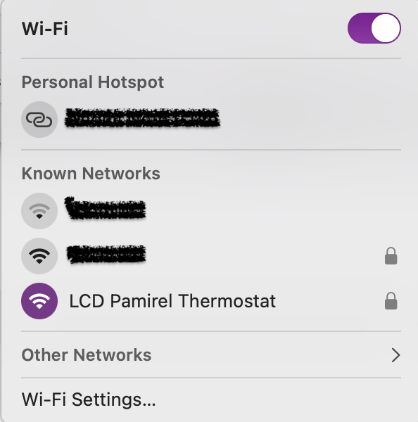
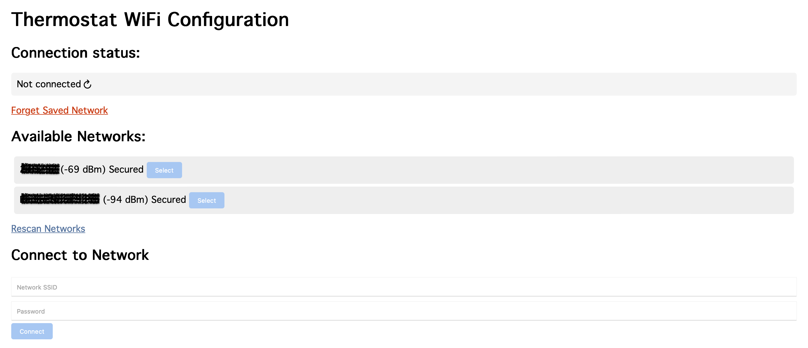
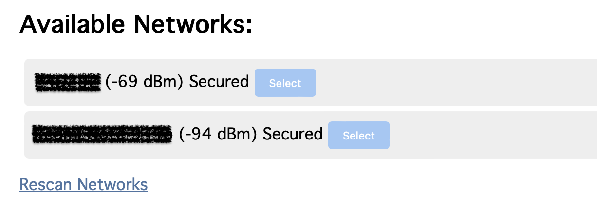
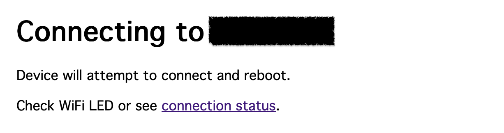
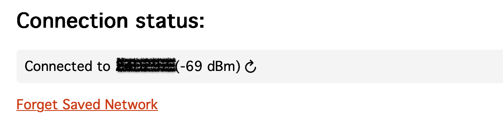
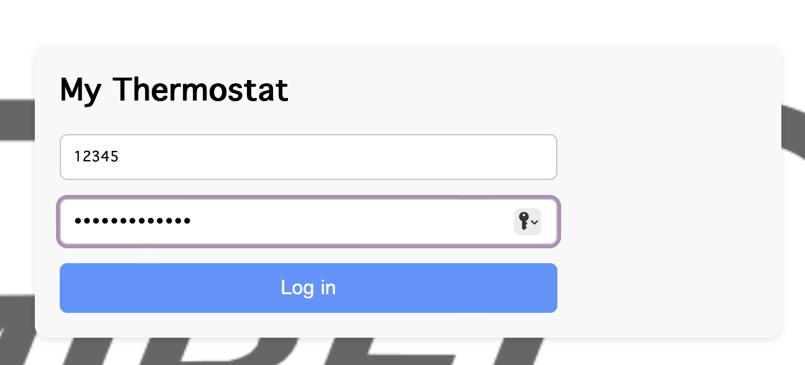
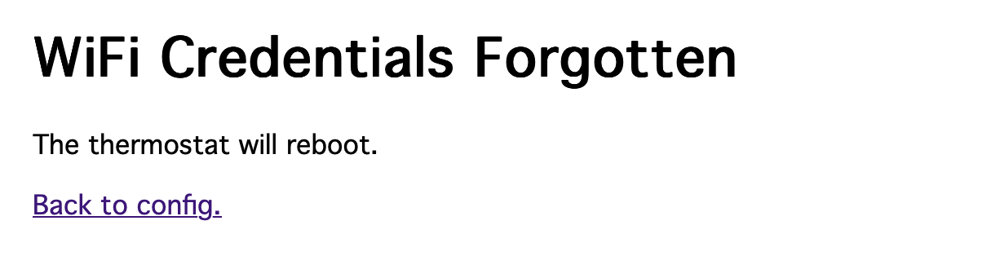

My Thermostat
This is a service provided for Pamirel thermostats version X
It allows you to:
- Access the history of data collected by the thermostat in your home
- Remotely set your thermostat's temperature from anywhere!
For the service to work, you must first connect your thermostat device to your local WiFi network!
To use the service you will need the documentation which came with your thermostat, as it conatians the password for "LCD Pamirel thermostat" as well as your personal ID and password. If you have lost it, please contact us!
Here you will find documentation on how to:
Accessing WiFi Configuration page
To access the WiFi configuration page of your thermostat, you need to connect to its access point.
Do the following:
- Use your phone or computer to connect to "LCD Pamirel Thermostat", with the credentials provided in your documentation
- It should appear among the available WiFi networks if you are close enough to your thermostat

If it doesn't appear, try resetting the thermostat
- Once connected, scan the QR code in your documentation or open a web browser and go to 192.168.4.1, where a webpage should appear

If no page is displayed, double-check that you are connected to the "LCD Pamirel Thermostat" access point
- Then follow the instructions in the Connecting to WiFi section to connect to your local network (SSID)
Connecting to WiFi
Once you have accessed the WiFi configuration page, you can connect your thermostat to your local WiFi network.
To do this, follow these steps:
- Choose the corrected network from the Available Networks and click Select

Note that if you cannot find your network, you can click Rescan Networks to refresh the list
- This will partially complete the Connect to Network form
- Input the network password and click Connect
- You should see the following page

Rebooting the thermostat also causes "LCD Pamirel Thermostat" to reset, meaning you have to reconnect to it if you wish to view the Connection status. If a connection is successfully established, the page will only be available for 5 minutes after restarting the thermostat
- To double-check that the connection was successful, you can click connection status
- It should show the network name and signal strenght

If your thermostat is reset it will reconnect to this network, but it can only remeber one network at a time. If you wish to connect to a different network you can follow the instructions in the Resetting WiFi section
- After this, you can Log in to My Thermostat with your thermostats ID. For help with this, see the Logging in section
Logging in
Once you have connected your thermostat to your local WiFi network, you can log in to the service.
To do this, follow these steps:
- This is done on the website you are on now
- In the navbar at the top, click My Thermostat
- On this page, you will find a log in form
- Log in using your thermostat ID and password, both of which you can find in the documentation which came with your thermostat

- After logging in, you will be shown the latest recorded data as well as the options to "Set Temperature" and view "History"
- Clicking Set Temperature will allow you to set the temperature of your thermostat remotely
- Clicking History will show you the types of history which can be viewed and the duration of displayed data
Note that the data is only available for the last year
- After selecting the type of history, click Temperature/Signal history to view the data plotted with time
- Use these features at your liesure!
To log out, you simply leave or refresh the page
Resetting WiFi
If you need to reset the WiFi connection of your thermostat, you can do so by:
- Pressing the reset button on the thermostat for a few seconds
- This will make the thermostat host "LCD Pamirel Thermostat" for 5 minutes
- During this time, you can connect to it using your phone or computer and visit 192.168.4.1
- In this time you can click Forget Saved Network under Connection status
- After which this page should appear

Rebooting the thermostat also causes "LCD Pamirel Thermostat" to reset, meaning you have to reconnect to it, but with no credentials to connect with, the webpage will be available indefinitely (not just 5 minutes)
- After successfully returning to the config page, you can follow the instructions in the Connecting to WiFi section to connect to a new WiFi network